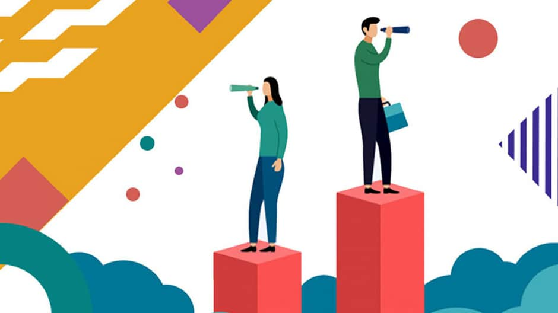

Профессиональная принадлежность – одна из значимых характеристик человека. Работа занимает значительную часть нашей жизни. Вот почему найти себя в мире профессий означает возможность получать удовлетворение от работы, максимально проявлять свои способности, чувствовать себя нужным людям. Это верный способ оставаться в форме, сохраняя физическое и психическое здоровье.
Чтобы не совершить ошибку в предстоящем выборе и впоследствии заниматься тем, что действительно будет интересно, необходимо научиться разбираться в специфике профессий, а также в основных понятиях, связанных с профессиональной и трудовой деятельностью.
Что такое профессия?
Профессия – это род трудовой деятельности, предполагающий наличие определенных теоретических знаний, которые подкрепляются рядом практических навыков, приобретенных путем целенаправленной подготовки и опыта работы.
С точки зрения общества профессия – это система профессиональных задач, форм и видов профессиональной деятельности людей, которые могут обеспечить удовлетворение потребностей общества в достижении значимого результата, продукта. С точки зрения конкретного человека профессия – это деятельность, которая является источником его существования и средством личностной самореализации.
Самые востребованные профессии 2021 года
При выборе профессии в первую очередь стоить обращать внимание на свои интересы, хобби, а не на уровень дохода, популярность и прочее. Эти пункты конечно очень важны, но если вам это не будет , то вы просто растратите всю свою энергию попусту и от вашей работы будет мало смысла ка для общества, так и для вас самих. В наше время существует множество профессий на любой вкус. Для гуманитария, технаря, творческого человека, тех, кто людит учиться и кто нет. Абсолютно все могут найти что-нибудь свое.
Также я считаю, что все могут все. Дело только во времени, желании и практике. И если у вас что-то не получается это не значит, что вы не способны к этому и нужно отступить. Это означает лишь то, что вам пока не хватает практики и опыта. Можно обучиться чему угодно, даже если у вас нет склонности, просто это займет больше времени. Вопрос только в вашем желании. Сейчас есть безграничное количество разных ресурсов для обучения, как платных, так и бесплатных. Поэтому идите по зову своего сердца несмотря ни на что.